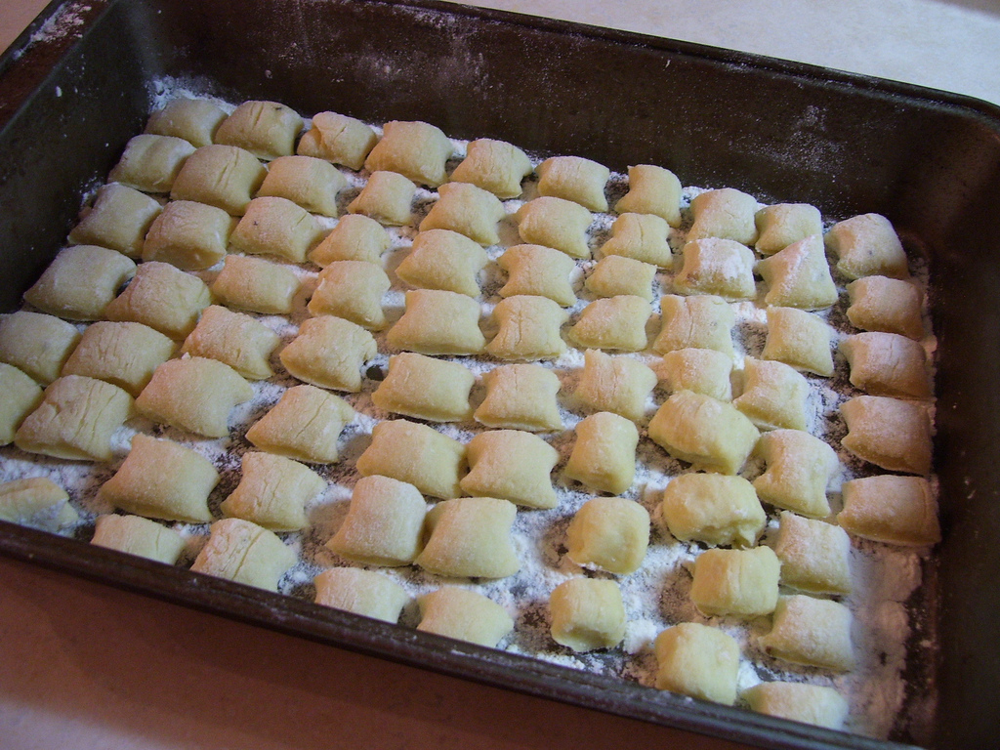

Gnocchi with Shallot Bechamel
Ingredients
- 0.75 kg russet potatoes
- splashes of extra virgin olive oil
- 2 egg yolks
- Approx. 1 cup of flour
- pinch of salt
Special Equipment
- Potato ricer
March 6, 2010
So last night I was itching for some gnocchi. I had some storebought stuff sitting around but not enough for two, and CL said he wanted some as well. So, I had some potatoes, and I figured well, maybe I’ll make my own gnocchi. It was 11:30 at night but I didn’t really mind. I didn’t know what to expect but they came out far surpassing my expectations!
I basically used this recipe, but didn’t really pay too close attention and ended up using a lot less flour. My procedure was also slightly different.
Compared to storebought gnocchi, these are silky clouds of potato, instead of chewy, slightly pasty mounds. I just absolutely loved them so much that today I made a triple batch to freeze so I always have delicious gnocchi. They also do not have ridges, mostly because I am too lazy to make the “traditional” ridges, but also because I’ve heard that these ridges are not all that traditional after all. The recipe linked above indicates that in Italy, they do not include the ridges most of the time. Go figure.
- Scrub the potatoes clean under running water and slice them into approximately 1.5 inch thick discs. Toss them with a bit of olive oil and put them in an aluminum foil lined dish. Cover with aluminum foil and bake at 350 degrees F for approximately 30-45 minutes, or until the potatoes are tender when poked with a fork.
- Immediately after removing the potatoes from the oven, use forks to transfer potatoes a few at a time into the potato ricer, skin and all. Most potato ricers will deal effectively with most of the skin and you will end up with the occasional attractive fleck of skin in your gnocchi dough, which I really like, but your mileage may vary. If it’s too annoying to rice with skins, remove the skins before pressing if desired. If you do not remove the skins, periodically clean the skins out of the ricer before continuing to rice more potatoes. Rice all of the potatoes into a large bowl.
- Lightly beat the egg yolks and pour them into the centre of the riced potatoes, stirring immediately with a fork in order to avoid creating a large lump of scrambled eggs. Add flour a bit at a time while stirring with a fork. Remember to add the salt now (I forgot!).
- When you’ve added enough flour (at least 3/4 cup), turn out the dough onto a well-floured surface and start to knead it until smooth. It should be cool enough to handle and knead now, but if it isn’t, you can leave it for a few more minutes. The dough may still be sticky but you can keep adding flour as you knead it. Only add enough flour to avoid a really sticky dough – dough should still be slightly sticky. Don’t over-knead – keep it to about 3 minutes.
- Chop the dough into about 6 similar sized pieces and, one piece at a time, roll it between your palms and the counter to create a long rope. Stop when the rope is between 1.5-2.5 cm wide depending how large you want your gnocchi. Using a knife, chop the gnocchi into approximately square pieces and place them (separated) in a floured tray. Repeat with the rest of the chunks of dough.
Trays of gnocchi can either be frozen and dumped into a bag for later (you do not want to put them together in a bag right away or they will freeze together- dump them in the bag once they have frozen in the tray, about 1-2 hours) or cooked immediately. To cook gnocchi, bring a pot of salted water to a boil. Dump gnocchi in and stir immediately (and gently) to avoid gnocchi clumping together. When gnocchi start to float, fish them out of the water with a slotted or mesh spoon (don’t do them all at once- just do the floating ones. Depending on sizes and consistency, some gnocchi could take longer than others to cook. This method ensures equally cooked gnocchi with no raw pieces). Optionally, you can also fry them in butter after boiling which is nice sometimes.
Ingredients
- 1 tbsp butter
- 1 medium shallot or 1/3 medium onion
- 1 tsp all-purpose flour
- 1/4 cup milk
- salt and pepper to taste
Bechamel shallot sauce for gnocchi
This is my favourite sauce for gnocchi. I don’t know if it has a name other than bechamel sauce with shallots. I have made it so many, many times, and it’s always delicious and creamy (even though it has no cream in it, and works fine with fat free milk, but with all the butter don’t think this is a low fat sauce!). The trick to avoiding lumps is to stir constantly after adding the milk. This recipe is for 1 serving or 1 bowl of gnocchi – you can double or triple it as you like or need. Tip: remember that 3 teaspoons makes a tablespoon and 4 tablespoons makes a 1/4 cup, so if you’re multiplying the recipe, you don’t need to use your measuring spoons a bajillion times.
If you have never made bechamel sauce, don’t be scared, it’s not so bad as long as you remember to stir constantly after adding the milk.
- Melt the butter over medium heat in a small saucepan (or appropriately sized pan if you are multiplying the recipe).
- Dice up the shallot and add it to the butter when it is bubbling.
- Fry for about 4 minutes, or until shallot begins to turn light golden, stirring occasionally to avoid scorching.
- Add flour and stir some more. Fry for another 3-4 minutes. Shallots should turn darker golden brown but a milk-chocolate colour is gone too far.
- Add milk and stir constantly until mixture is bubbly and thick, about 4 more minutes. If you are impatient, you can turn the heat up but make sure you are stirring constantly or it will scorch and/or turn lumpy.
- Season with salt and pepper, and pour over gnocchi immediately. If you need to wait for gnocchi to be done, cover the pot and leave on lowest heat/no heat for no more than 10 minutes.